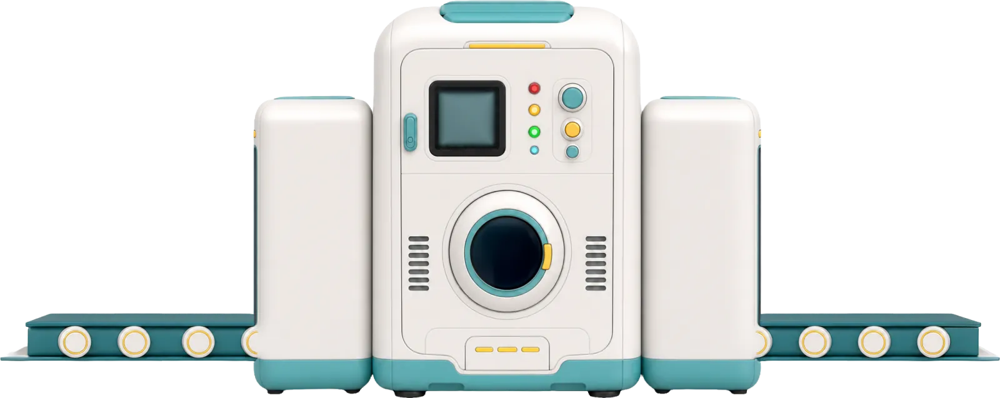
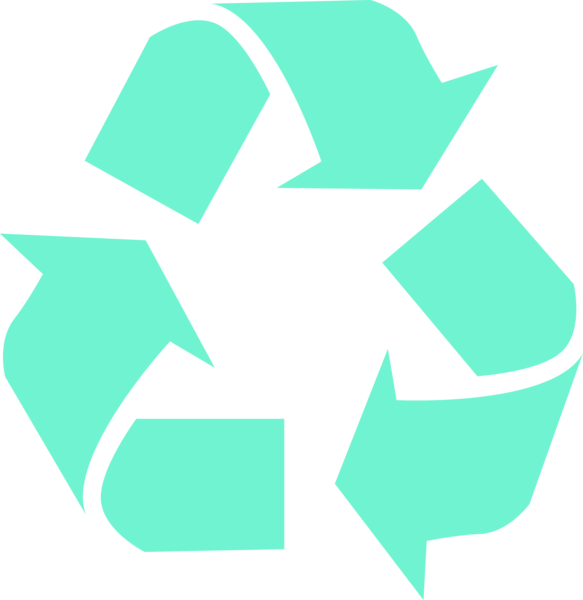

Klocek 16
Drugie życie materiałów
Wrzuć odpad do maszyny i wskaż, co może z niego powstać. Wybierz jeden z trzech produktów.
Runda 1 z 6


Co może powstać z tego materiału?
To uproszczony model. W rzeczywistości odpady są zbierane, sortowane, oczyszczane i przetwarzane na surowce, z których powstają nowe produkty.